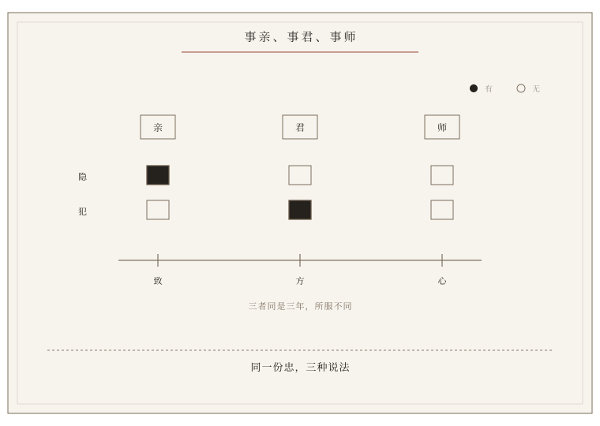

檀弓上 · 三·二 · 第 205 课
事亲有隐而无犯，事君有犯而无隐，事师无犯无隐；三者皆「左右就养」「服勤至死」，而丧三年之服各异。注「凡此以恩为制」「以义为制」「以恩义之间为制」。
说什么事：同一份忠心，三样说法。
落在哪一层：礼，兼及礼意。论恩、义、恩义之间三制之别。
为何编在此位：上节论继统之制，此节由制转入人之常行——一身上有三伦，各有其法。檀弓上首章群以此节为纲。
【经】事親有隱而無犯，左右就養無方，服勤至死，致喪三年。事君有犯而無隱，左右就養有方，服勤至死，方喪三年。事師無犯無隱，左右就養無方，服勤至死，心喪三年。
【注】隱，謂不稱揚其過失也；無犯，不犯顏而諫，《論語》曰「事父母，幾諫」。左右，謂扶持之；方，猶常也；子則然，無常人。勤，勞辱之事也；致，謂戚容稱其服也；凡此以恩為制。事君：既諫，人有問其國政者，可以語其得失，若齊晏子為晉叔向言之；有方，不可侵官；方喪，資於事父；凡此以義為制。事師：心喪，戚容如父而無服也；凡此以恩義之間為制。
【疏】此一节论事亲、事君及事师之法，臣子著服之义。注「无犯至几谏」：据亲有寻常之过，故无犯；若有大恶，亦当犯颜，故《孝经》云「父有争子，则身不陷于不义」是也，《论语》「事父母几谏」是寻常之谏。注「左右至常人」：凡言「左右」者据仆从之臣，此左右言扶持之，谓子在亲左相右相而奉持之；「子则然，无常人」，但是子则须如是，不常遣一人在左、一人在右。注「勤劳至为制」：服勤谓服持勤苦劳辱之事；「致之言至也」，谓哀情至极而居丧礼，故云「戚容称其服」；《曲礼》云「五十不致毁」，与此同。注「既谏至言之」：昭三年《左传》晏子对景公「踊贵屦贱」，谏景公重刑；后及其聘晋，与叔向言齐国之政将归陈氏，是既谏得言君之过；若未谏而言，则不可，故昭三年子大叔如晋，张趯与之言「火星中而寒暑退」，未曾谏君辄言君德之退，传云「张趯有知，其由在君子之后乎」，是被讥也。注「不可侵官」：成十六年《左传》晋楚战于鄢陵，栾书将中军，栾针为晋侯车右，晋侯陷于淖，栾书将载晋侯，针曰「书退！侵官，冒也；失官，慢也；离局，奸也」。注「方丧资于事父」：方谓比方，比方父丧礼以丧君，但居处饮食同耳，不能戚容称其服。注「心丧至为制」：亲有冥造之功，又有生育之惠，故怀哀戚之痛，同君衰服之限；君则徒有荣身显亲之事，而无冥造生育之功，故唯服粗衰；师则以恩爱成己，有同于亲，故不为制服，戚容如丧父而无服。
隐 注「不称扬其过失」。不言其非，非不知其非。
犯 犯颜而谏，当面逆之。
就养 就近扶持奉养。
无方 有方 方犹常。无方谓不常一人、不拘一位；有方谓各有其职，不可侵官。
致丧 注「戚容称其服」。哀情至极，容貌与所服相称。
方丧 比方父丧之礼以丧君。
心丧 戚容如父而无服。身无衰绖，心有三年。
事亲，为其隐过而不犯颜；扶持奉养不拘常位；服劳至死，致丧三年。事君，犯颜而谏而不为隐；奉养各有其职；服劳至死，比方父丧而三年。事师，不犯颜亦不为隐；扶持奉养不拘常位；服劳至死，心丧三年。
此节以三事并列，句式几乎相同，唯「隐」「犯」「方」「丧」四处错落。这正是古人文法：不变者见其同（皆就养、皆服勤至死、皆三年），变者见其异（隐与犯之有无、方与无方、致与方与心）。郑注三句「以恩为制」「以义为制」「以恩义之间为制」，是全节之骨：三种服，根在三种情。
第一层 隐与犯是一对 事亲有隐无犯，非谓亲有过而一味含默。疏说得明白：「亲有寻常之过，故无犯；若有大恶，亦当犯颜。」寻常之过，几谏而已；大恶当前，则《孝经》所谓「父有争子，身不陷于不义」。事君则有犯无隐：过恶众所共知，不言则社稷倾亡。一隐一犯之间，量的不是亲疏，是可挽回与不可挽回。
第二层 无方与有方是一对 事亲、事师皆「无方」，事君独「有方」。无方者，子之于亲左相右相，不常一人在左、一人在右；有方者，各有官守，不可越位。疏引栾针「书退！侵官，冒也」，正是「有方」之注脚。同是服勤，一处可以无定所，一处必须有定分。
第三层 三种三年 致丧、方丧、心丧：亲丧哀情至极、容貌与服相称；君丧比于父丧，但居处饮食同而不能尽同其戚容；师丧则无服，戚容如父而已。郑注说得极细：亲有冥造之功与生育之惠，君只有荣身显亲之事而无生育之功，师则以恩爱成己——故一有服、一降服、一无服。
第四层 恩义之间 事师「无犯无隐」，恰在两者之间：无犯同于亲之恩，无隐同于君之义。故郑云「以恩义之间为制」。师之一伦，在古人心目中正处在恩与义的交界处，既非血亲，亦非君臣。
与今日何干 对家人、对上级、对业师，往往用同一套话说，于是三种关系都说不准。此节给的是一把尺：先问这一段关系凭的是恩、是义，还是两者之间。
| 左 | 右 |
|---|---|
| 事亲有隐无犯 | 寻常之过几谏，大恶当犯颜 |
| 左右就养无方 | 扶持之，不常一人一位 |
| 致丧三年 | 戚容称其服，以恩为制 |
| 事君有犯无隐 | 既谏则可言其得失 |
| 左右就养有方 | 各有官守，不可侵官 |
| 方丧三年 | 比方父丧，以义为制 |
| 事师无犯无隐 | 恩义之间 |
| 心丧三年 | 戚容如父而无服 |
画一幅三段的静物场面，自左至右分三区，各区之间留出明显空白。左区：一张矮几，几上一只食器与一盏灯，几旁地上放一双履，示「就养无方」的日常扶持。中区：一张较高的案，案上整齐排列三枚竹简与一柄短笏，案前立一枚界石（矮方石），示「有方、不可侵官」。右区：一张空席，席上只置一顶素冠，冠旁无它物，示「心丧、有服之无」。三区地面同高，光自上方来。不画人、不写文字。赭色只用在右区那顶素冠的冠缨上。
